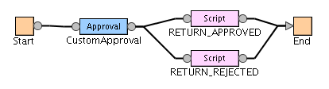
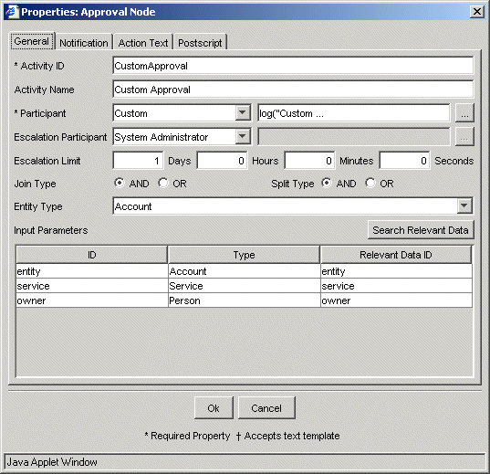
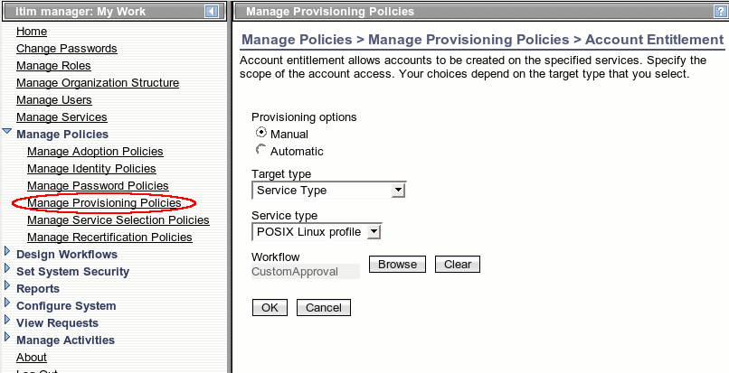
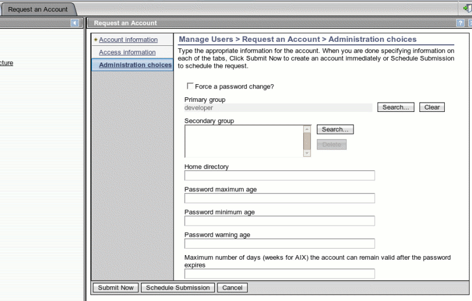

|
|
|

Creating a Custom Approval for a Group Request
Overview
This example describes creating a custom approval process that is determined by looking up an approver in a database. The approver chosen will depend on the value of the group in the account requested. The example illustrates two JavaScript extensions: one for JavaScript logging and the other for looking up the approver.
Building the Example
To build the examples follow the instructions given in Compiling the Examples.
Add the examples.jar file created by the build process to the application server's classpath by following the instructions given in Adding examples.jar to Classpath.
Registering the JavaScript Extensions
Edit the scriptframework.properties
file by adding these two lines (see Updating
the property files):
ITIM.extension.Workflow.log=examples.workflow.customApproval.itim50.LoggingExtension
ITIM.extension.Workflow.findApprover=examples.workflow.customApproval.itim50.CustomApprovalExtension
Restart the application server.
Creating the Database Tables
A database table is needed to store the mapping from group name to approver name. This is created in the same database as ISIM uses for its operational database. To use another database, a change of the example code is required. This table should be owned by the same user as the other ISIM database tables.
The fields in the database table are described in Table 1.
Table 1 Fields in APPROVERS Table
|
Field |
Description |
|
GROUP_NAME |
The name of the group being provisioned (primary key). |
|
APPROVER_NAME |
The common name of the approver. This should uniquely identity the approver. If it does not the approval will be routed to the system administrator. |
SQL scripts are included that will create the table and add sample data. Run the script in file custom_approver_db2.ddl (DB2), custom_approver_oracle.ddl (Oracle) or custom_approver_sqlserver.ddl (Microsoft SQL Server) using the native database command tools. All of the scripts can be found in workflow/src/examples/workflow/customApproval/itim50/.
The sample data in Table 2 is added to the database.
Table 2 Sample Data
|
Group Name |
Approver Name |
|
developer |
Bill Sanderman |
|
tester |
Jill Vox |
Creating the Entitlement Workflow
Open up the workflow designer (via Design Workflows > Manage Account Request Workflows) and create an advanced approval workflow for a general service (Service type = All), as shown in Figure 1.

Figure 1 Entitlement Workflow
Double click on the approval node to bring up the properties dialog and set the
participant type to Custom, as shown in Figure 2.

Figure 2 Approval Dialog
Add this script to find the participant:
log("Custom
Approval");
var account = entity.get();
var group = account.getProperty("erposixprimarygroup")[0];
var approverDN = findApprover(group);
log("approverDN: " + approverDN);
return new Participant(ParticipantType.USER, approverDN);
Set the Escalation Participant to System Administrator. Save the workflow
before exiting. For the sake of illustration this example will set the
entitlement workflow into the provisioning policy for a Linux service.
This is shown in Figure 3.

Figure 3 Screenshot for Provisioning Policy Entitlement
The membership for the policy is all people.
Testing the Custom Approval Process
Testing
includes provisioning of a Linux account with a primary group corresponding to
one of the participants in the table and checking that the person approving the
request matches the file entry. Add people matching the sample data
in Table 2 (two people with common names Bill Sanderman and Jill Vox). Create
an ISIM account for Bill Sanderman. Add groups developer and tester on the
managed resource. Run a reconciliation on the service. Provision a Linux
account with the developer group. This is shown in Figure 4.

Figure 4 Screenshot of Linux Form for Provisioning with Developer Group
Log in as Bill Sanderman with the ISIM account already created for him.
You should be redirected to the To Do List and have a request for approval in
the list. After approving the request it will be provisioned.
Source Code for the Example
The source code for the examples is in the files LoggingExtension.java, CustomApprovalBean.java, and CustomApprovalExtension.java. The log extension simply logs messages to the ISIM log file in debug mode to help in debugging JavaScript. The custom approval bean provides the logic to look up the approver for a group and returns the distinguished name of the person who approves accounts for that group. The custom approval extension ties into the scripting framework provided by ISIM, but uses CustomApprovalBean to provide all of the logic for the lookup.
Additional Considerations
Maintaining the List of Approvers
The approvers are stored in the database with the group requested as the key and the common name identifying the approver. This has the limitation that there may be multiple people with the same name. Ideally, the distinguished name of the approver would be used to be uniquely identified.
Also, the data must be entered into the database and kept up to date. This may require a specially built utility needs. The utility may take the form of an import tool to import data available in another format from documentation on an equivalent manual process.
Avoiding Duplicate Approvals
In this example, we routed the approval to a given person based on the value of the primary group. However, on a modify account request the group may not change. This should be detected and handled differently. This can be done by writing additional script or Java code to examine the account changes rather than just the group value.
Extending to Other Account Types
The example can be generalized to include multiple account types or it can be copied and modified to work for other account types. Considering the development, testing, and maintenance work involved it would be best to generalize to work for all account types. To do this the database schema and code would need to be changed. The custom approver script could pass the account object to the JavaScript extension. The JavaScript extension would then determine the approver based on the account type and group value.
Multiple Groups in a Single Request
Many
account types can have multiple values for group and they can be requested in a
single transaction. In addition, there may be different types of groups,
such as primary and secondary UNIX groups. In this case routing to
multiple approvers seems like a reasonable requirement. This can be
achieved by using the loop construct in the workflow designer. Each
iteration of the loop would have approval by the approver for one of the groups
in the request.
It is possible that in a request for multiple groups that some of the groups
will have the same approver. Additional development work is needed to
make sure that these approvers are not routed multiple requests for approval
because the user interface for each approval request is the same.